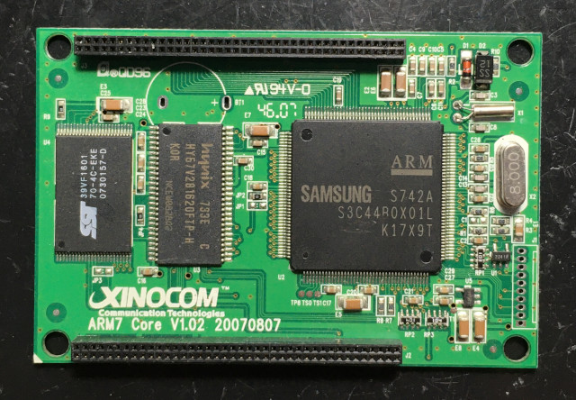
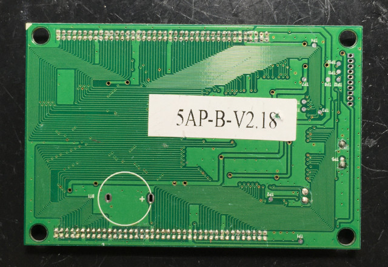
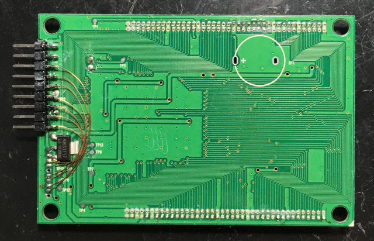
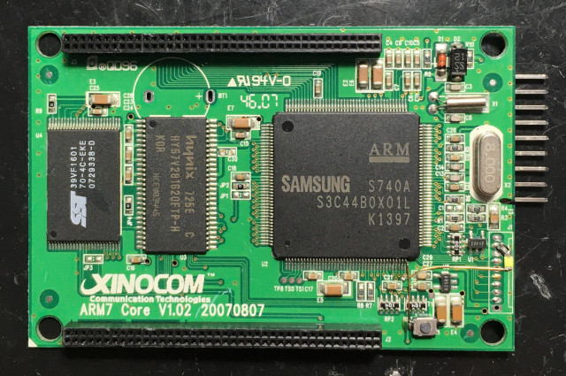
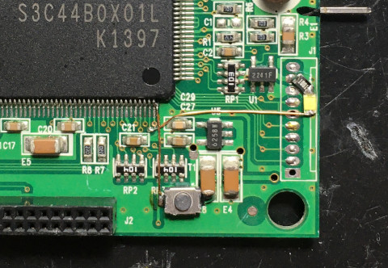
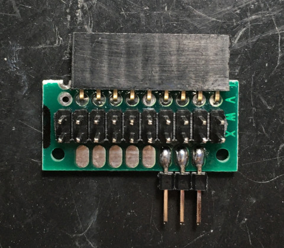
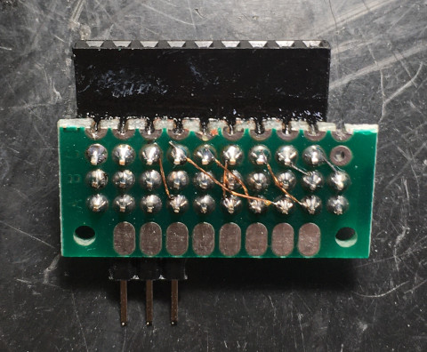
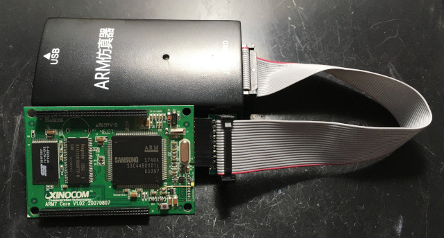
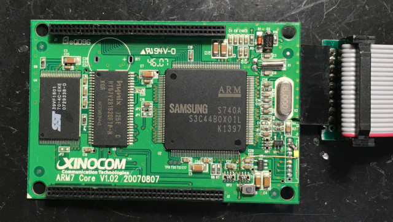

Steward
分享是一種喜悅、更是一種幸福
微處理器 - Samsung S3C44B0X - 開發板
司徒很早以前就一直想寫一些關於S3C44B0X晶片的文章，畢竟S3C44B0X是一款相當經典的ARM7晶片，只可惜一直找不到適合使用的開發板，原因是司徒還是喜愛小巧且單純的開發板，在這樣的條件下，確實不容易尋找到適合的開發板，不過，皇天不負苦心人，司徒最後終於在閒魚找到一片相當適合撰寫文章的開發板

2007年製造的開發板，距今已經是16年前的開發板，時間流逝真的相當快...
背面

拉出JTAG腳位，司徒還是比較習慣使用2.54的排針，由於S3C44B0X的VDD使用2.5V，而VDDIO則是使用3.3V，從JTAG腳位只能拿到3.3V，因此，司徒使用一顆AMS1117-2.5V電壓轉換IC

由於該開發板並沒有任何LED以及按鍵，因此，司徒焊接了一顆LED(GPG-5)和按鍵(GPG-6)


為了可以方便連接JTAG 20Pin，司徒焊接了一個轉板


連接J-Link

完美的開發板
